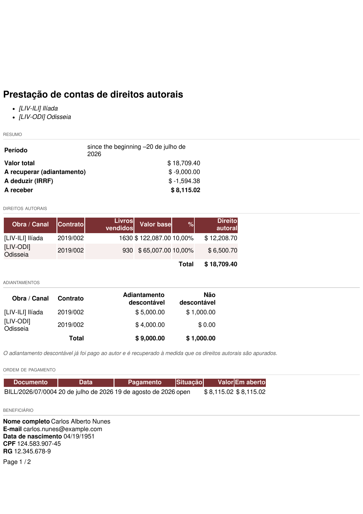

Emita o extrato de direitos autorais de cada autor — obra por obra, com adiantamentos, IRRF e o líquido a receber — em PDF, para imprimir ou enviar por e-mail direto do sistema.
Este módulo é a face do sistema voltada ao autor. Ele acrescenta:
Os números vêm do Cálculo de royalties e casam com as faturas do Pagamento de royalties: o total do extrato é, por construção, o mesmo saldo em aberto que a fatura do autor paga. Com o módulo de IRRF sobre direitos instalado, a dedução de IRRF do extrato segue a tabela progressiva (ou o modo do favorecido).
O módulo não tem parâmetros próprios — mas o extrato só fica completo se o cadastro do autor estiver:
A mesma aba mostra, somente para consulta: as Linhas de royalty do autor em todos os contratos (com a Data do Último Pagamento e o saldo de cada uma), os Direitos autorais em aberto somados e a Última prestação enviada.
Ao enviar, o sistema ainda:
O envio exige e-mail cadastrado: se algum dos selecionados não tiver, o assistente para com a mensagem "Defina primeiro um endereço de e-mail para: …" e nada é enviado até você completar o cadastro.
O documento sai com o cabeçalho e as cores da sua empresa (a paleta das tabelas é derivada da cor principal definida em ) e as datas por extenso em português. As seções:
| Seção | Conteúdo |
|---|---|
| Resumo | Período, Valor total (o que as obras renderam), A recuperar (adiantamento) — mostrado só quando há adiantamento sendo recuperado —, A deduzir (IRRF) e A receber (o líquido). |
| Direitos autorais | Uma linha por obra/canal com saldo em aberto: Obra / Canal, Contrato, Livros vendidos, Valor base, % (ou "variável", quando a faixa mudou dentro do período) e Direito autoral. |
| Faturas em aberto | As faturas de pagamento do autor ainda não pagas, com data, vencimento, valor e situação — o valor delas confere com o total do extrato. |
| Vendas especiais | Detalhe das vendas com desconto qualificado das obras do autor no período: cliente, documento, obra, quantidade, desconto e valor. |
| Adiantamentos | Os adiantamentos por obra, separando Adiantamento descontável e Não descontável — impresso quando existe algum. |
| Dados do autor | Nome completo, CPF, RG, PIS, data de nascimento, nacionalidade, endereço, e-mail e os dados bancários (banco, agência, conta corrente). |

Feiras, saldões e vendas diretas costumam sair com desconto grande — e o contrato do autor muitas vezes é por preço de capa. Sem tratamento, o autor receberia royalty sobre um preço que a editora não praticou. A venda especial resolve isso: ela é sempre calculada sobre o valor líquido faturado, o que realmente entrou, independentemente do modo da linha de royalty.
Uma venda conta como especial quando as duas condições valem ao mesmo tempo:
Contrato a 10% sobre preço de capa de R$ 60. Numa feira (equipe configurada), o livro sai com 50% de desconto, faturado a R$ 30. Em vez de R$ 6 por exemplar (10% da capa), o autor recebe R$ 3 (10% do líquido) — e o extrato mostra a venda, o desconto e o valor, sem surpresa na prestação de contas.
A regra de cálculo vive no Cálculo de royalties; esta página descreve como ela aparece para o autor. Em contratos que já apuram sobre o valor líquido, a venda especial não muda o valor — só ganha o detalhamento próprio no extrato.
O extrato veio "Nenhum direito autoral em aberto". O autor não tem saldo no período: ou as vendas ainda não foram apuradas (rode Preencher Linhas de Royalties no contrato), ou tudo já foi pago, ou o adiantamento ainda cobre o que as obras renderam.
Por que "A receber" é menor que "Valor total"? Pelas duas deduções que o próprio extrato mostra: a recuperação do adiantamento e o IRRF. O documento existe justamente para o autor ver essa conta.
Posso reemitir um extrato já enviado? Pode — imprimir não altera nada, e enviar de novo apenas gera outra mensagem e atualiza a Última prestação enviada. Os valores só mudam se a apuração ou os pagamentos mudarem.
Consigo emitir para vários autores de uma vez? Sim: selecione-os na lista de Favorecidos e use a mesma ação — Imprimir gera um PDF com um extrato por autor; Enviar por e-mail manda a cada um somente o seu.
O período impresso começa "desde o início". É o esperado para quem nunca recebeu: sem data de último pagamento, o extrato cobre tudo desde a primeira venda apurada.
Todo documento do sistema carrega um prefixo na numeração — CO/2026/00001 é um acerto, AT/2026/00042 é um chamado. A lista é a mesma em todos os manuais:
| Prefixo | O que é |
|---|---|
C | Pedido de consignação: o pedido que põe livros na prateleira do cliente — C00001, no lugar do S da venda comum. |
CO/ | Consignação, o documento do acerto: registra o que o cliente vendeu e vira venda — CO/2026/00001. |
CR/ | Retorno de consignação: o documento que pede a devolução dos exemplares da prateleira — CR/2026/00001. |
CA | Auditoria de consignação: reconstrói o saldo da prateleira do cliente pelas notas fiscais e registra o ajuste — CA00001. |
CP/ | Campanha de consignação: o sortimento-alvo por canal — quantos exemplares de cada título as prateleiras devem ter — CP/2026/0001. |
AC/ | Acordo de Consignação: o contrato com a livraria, dono da prateleira — AC/2026/00001. |
COM/OUT/ | A série da remessa de consignação ao cliente, do armazém à livraria — COM/OUT/2026/00001, no espelho do WH/OUT. |
MP/OUT/ | A série das entregas de marketplace (Olist): o pacote de pessoa física, na caixa de despacho própria do depósito — MP/OUT/2026/00001. |
COM/MOV/ | A série dos fluxos internos de prateleira da consignação — COM/MOV/2026/00001. |
COM/IN/ | A série do retorno de consignação, da prateleira ao armazém — COM/IN/2026/00001, no espelho do WH/IN. |
REM/ | Remessa: a nota de simples remessa, sem cobrança — a numeração vem do diário fiscal REM. |
COL/ | Coleta: o lote do pedido de coleta às transportadoras — COL/2026/00001. |
AT/ | Atendimento: o chamado nascido do e-mail comercial — AT/2026/00001. |
MBX/ | O lote de envio de metadados à Metabooks — MBX/2026/00001. |
Impostos de Direitos Autorais/ | O lote da fatura acumuladora do IRRF retido dos autores no mês. |
Royalties entre Empresas/ | O lote da fatura acumuladora de royalties entre as empresas da casa. |
| Do próprio Odoo | |
S | Pedido de venda comum — S00001; o pedido de consignação usa o C no lugar. |
WH/OUT | Entrega comum do armazém: a transferência de saída padrão do Odoo. |
WH/IN | Recebimento do armazém: a transferência de entrada padrão do Odoo. |
Bases antigas guardam transferências nas séries COM/ e RET/, de antes da separação por direção — o histórico não é renumerado.
Manual completo, com busca e as demais páginas: Prestação de contas.